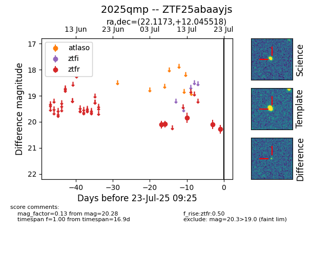

Target ZTF25abaayjs at 2025-07-23 11:48, see:
FINK: fink-portal.org/ZTF25abaayjs
Lasair: lasair-ztf.lsst.ac.uk/objects/ZTF25abaayjs
ALeRCE: alerce.online/object/ZTF25abaayjs
TNS: wis-tns.org/object/2025qmp
YSE: ziggy.ucolick.org/yse/transient_detail/2025qmp
alt names
ZTF25abaayjs (ztf,fink)
2025qmp (tns,yse)
coordinates:
equatorial (ra, dec) = (22.1173,+12.04552)
galactic (l, b) = (137.0430,-49.80891)
photometry
last ztfr=20.28
5 ztfr detections
